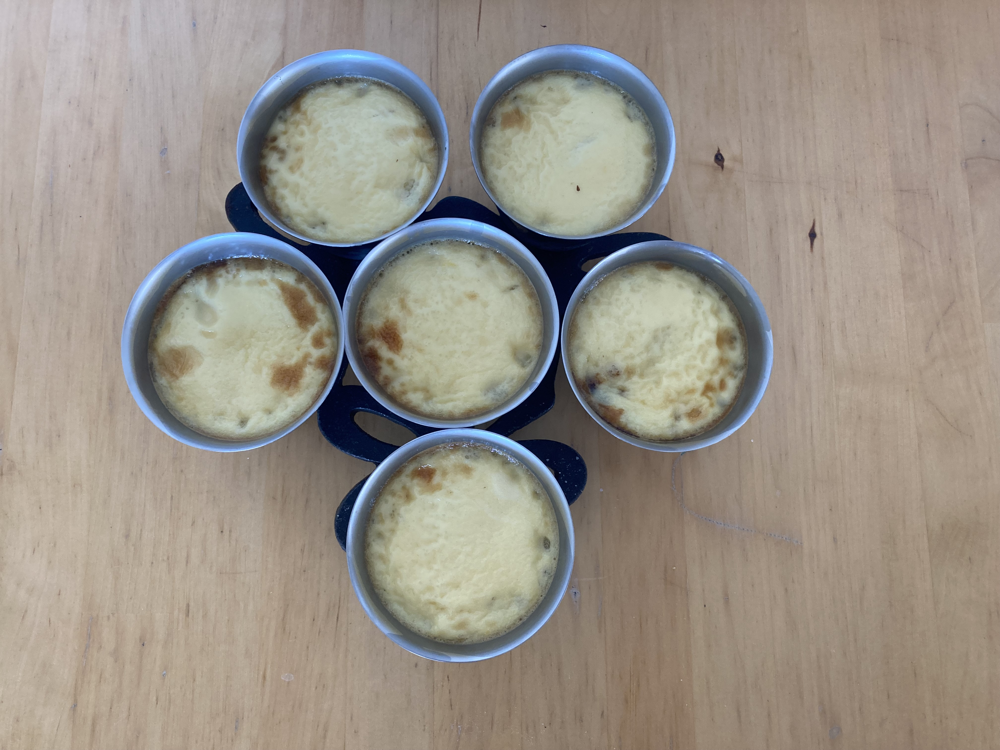
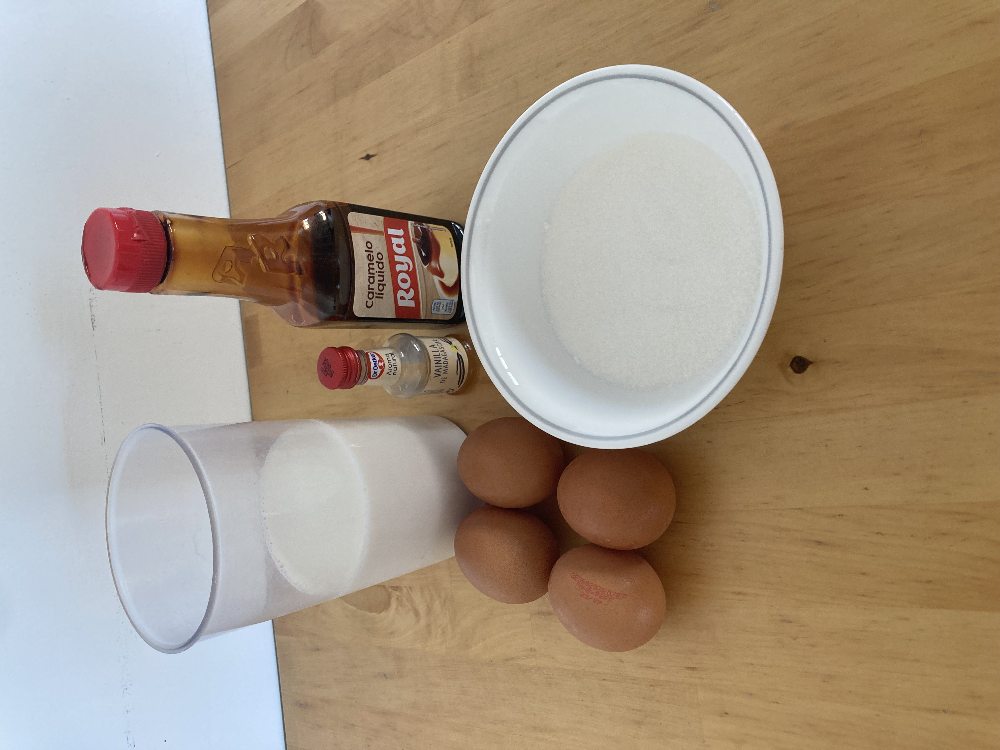
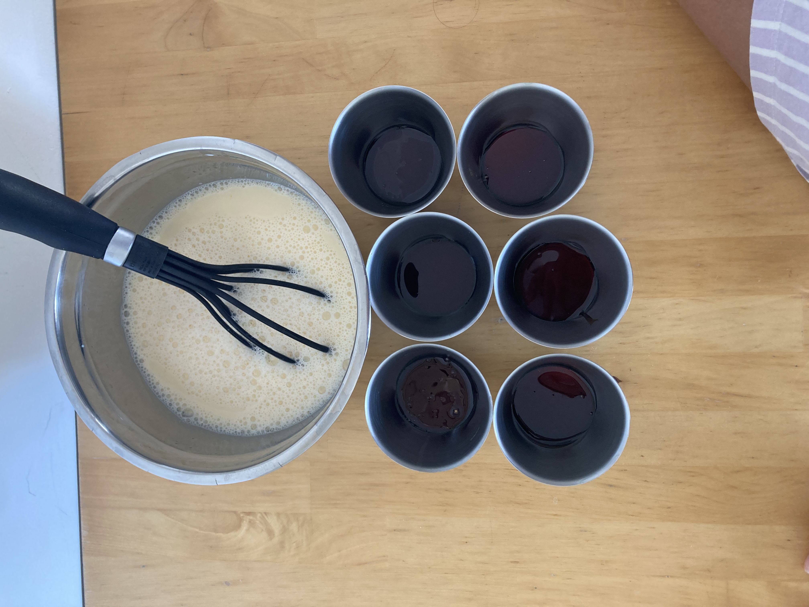

Resultado final

Un flan casero, cremoso y elaborado sin aceite, perfecto para personas que no pueden consumir grasas vegetales.
🥚 Ingredientes

- 4 huevos
- 450 ml de leche
- 100 g de azúcar
- Caramelo líquido
- Esencia de vainilla (opcional)
👨🍳 Preparación

- Pon un poco de caramelo líquido en el fondo de los moldes.
- Mezcla los huevos con el azúcar.
- Añade los 450 ml de leche y la vainilla (opcional).
- Reparte la mezcla en los moldes.
- Cocina en la Air Fryer durante 15 minutos a 150 °C.
- Deja enfriar completamente antes de desmoldar.
📋 Información de la receta
⏱️ Tiempo de elaboración: 10 minutos
🔥 Tiempo de cocción: 15 minutos
🍽️ Raciones: 6 personas
😊 Dificultad: Fácil